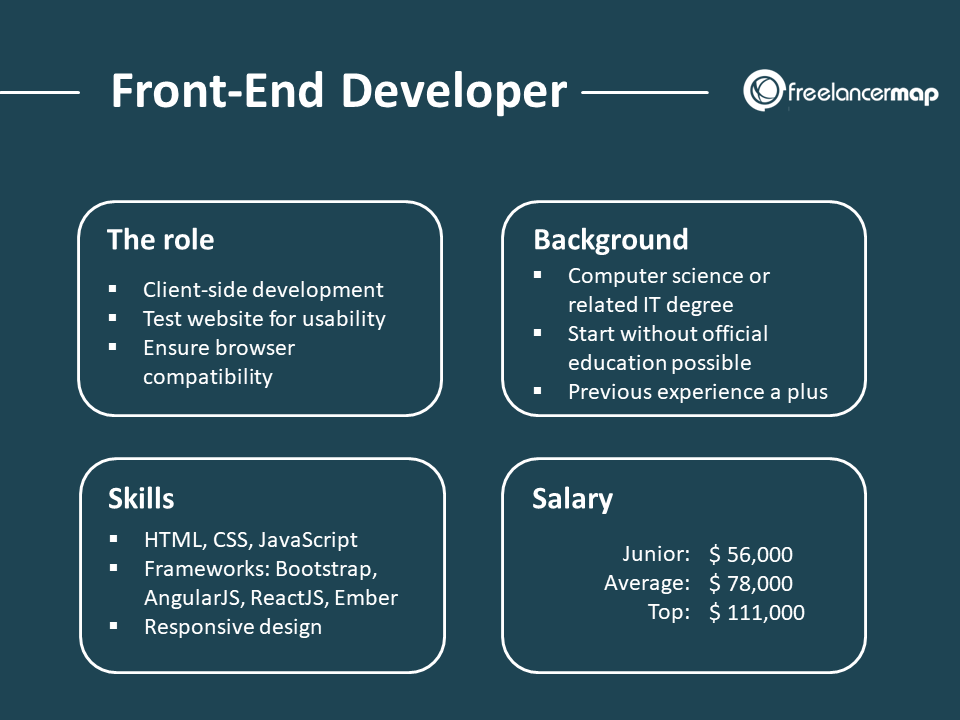
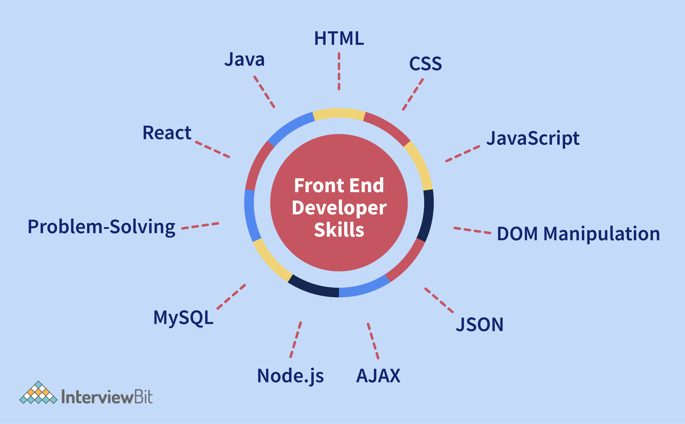

What Is Front End Development?
Want to learn web development as a beginner, but not sure where to start?
Front end developers create the content you see when interacting with a website. This includes visual elements
such as menus, buttons and animations that can execute on a client’s machine. Front end developers use three
primary languages: HTML to create a website’s structure, CSS to change how a website looks and JavaScript to
create interactive elements.
The front end is basically the front layer of your website. It includes the design, content, and functionality – in other words, all the things that users interact with: Fonts, buttons, tables, menus, colors, etc. The front end links the graphic user interface (GUI) with the execution of actions. If your laptop were a website, your keyboard, display, mouse, and all other buttons would be the front-end. Those are the things you see, click, and touch. Anything on the inside – like your hard drive, video card, and processor, is the back end.
The Role of a front-End Developer

Now that you know what a front-end development is, answering this second question is pretty easy. The job of a front end developer is to create anything the user interacts with.
Therefore, a front-end developer will use programming languages such as HTML, CSS, and JavaScript – we’ll get into those in a second. But there are other things a front-end programmer must optimize – the speed and efficiency of a website so that the site offers an outstanding user experience.
Apart from that, front end developers must be constantly thinking about how people interact with websites or how they look for things – that’s quite a lot of tasks. Front end developers must be analytical, creative, and have a good technical base to create interfaces that work.
Who is a Front End Developer?
A front end developer is someone who implements web designs through programming languages like HTML, CSS,
and
JavaScript. The front end developers work with the design and outlook of the website. Whereas, the back
end
developers program what goes on behind the scenes like databases. If you head to any site, you can see the
work of a front end developer in the navigation, layouts, and also the way a site looks different from
your
phone.
Web design is all about the way a website looks, while front end development is how the design actually
gets
implemented on the website. The front end developer is the person who is responsible for the
implementation.
What are the responsibilities of a front-end developer?
- Develop with HTML, CSS and JavaScript
- Maintenance and optimization of websites and user interfaces
- Create tools and elements that improve the site’s interaction on different devices or browsers
- Manage and optimize software workflow
- Implement Onpage SEO practices
- Improve user usability with new features and processes
- Transform a UX/UI design (sketch, mockup) into reality
- Improve web loading speed
- Ensure web accessibility
What skills does a front-end developer need?
Frontend developers utilize different web technologies to change coded data into user-friendly interfaces. Many among these are Cascading Style Sheets (CSS), JavaScript, HyperText Markup Language (HTML), etc. Mentioned below are brief explanations of these technologies that frontend developers must be acquainted with.
